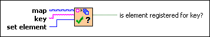

Registration Map:Confirm Registration VI
Owning Palette: Registration Map VIs
Requires: Base Development System
Checks if a set element is registered for a key in a registration map. This VI signals the calling VI if the set element has registered for the key.

 Add to the block diagram Add to the block diagram |
 Find on the palette Find on the palette |